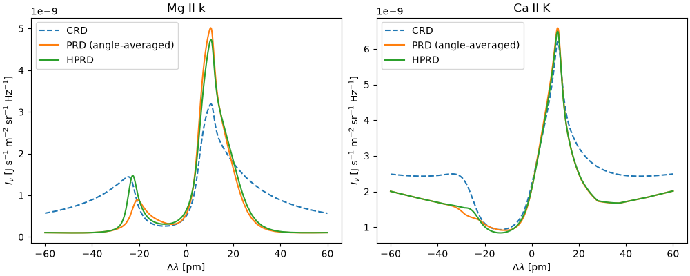

Note
Go to the end to download the full example code.
PRD synthesis of Mg II k and Ca II K with a chromospheric flow
The resonance lines of Mg II and Ca II are strongly affected by partial frequency redistribution (PRD). Here we solve the NLTE problem for H, Ca II and Mg II simultaneously in the FAL C model with an upflow in the upper chromosphere, comparing three treatments of the line scattering:
complete redistribution (CRD),
angle-averaged PRD,
hybrid PRD (HPRD, Leenaarts et al. 2012), which accounts for the Doppler shifts of the atmospheric velocity field in the redistribution by evaluating the scattering integral in the plasma rest frame.
In a static atmosphere, the angle-averaged and hybrid treatments agree, but angle-averaged PRD is not valid in the presence of flows.
import time
import matplotlib.pyplot as plt
import numpy as np
import lightweaver as lw
from lightweaver.fal import Falc82
from lightweaver.rh_atoms import CaII_atom, H_6_atom, MgII_atom
Construct the atmosphere: FAL C, with a vertical velocity shear in the upper chromosphere, where the cores of Mg II k and Ca II K form. The velocity rises from 0 below ~1.2 Mm to a 10 km/s upflow (vz > 0, towards an observer at disk centre) above ~1.8 Mm.
def make_atmos():
atmos = Falc82()
atmos.vz[:] = 10e3 * 0.5 * (1.0 + np.tanh((atmos.z - 1.5e6) / 0.15e6))
atmos.quadrature(5)
return atmos
Set up and iterate the simulation. The H & K lines of Ca II, the h & k lines of Mg II and Lyman alpha & beta are flagged as PRD lines in these model atoms. When prd=True is passed to lw.iterate_ctx_se, the PRD emission profile (rho) is updated alongside the populations, and hprd=True on the Context enables the hybrid treatment. We also conserve charge, updating the electron density alongside the populations of the active species.
def synthesise(prd, hprd=False):
atmos = make_atmos()
rad_set = lw.RadiativeSet([H_6_atom(), CaII_atom(), MgII_atom()])
rad_set.set_active('H', 'Ca', 'Mg')
spect = rad_set.compute_wavelength_grid()
eq_pops = rad_set.compute_eq_pops(atmos)
ctx = lw.Context(atmos, spect, eq_pops, conserve_charge=True, hprd=hprd, Nthreads=2)
start = time.time()
lw.iterate_ctx_se(ctx, prd=prd, quiet=True)
print(f'Converged in {time.time() - start:.1f} s')
return ctx
ctx_crd = synthesise(prd=False)
ctx_prd = synthesise(prd=True)
ctx_hprd = synthesise(prd=True, hprd=True)
Converged in 14.6 s
Converged in 28.4 s
Converged in 34.3 s
Compute the emergent intensity at disk centre (mu = 1) on wavelength grids around the lines (vacuum wavelengths, in nm).
mg_k = 279.635
ca_k = 393.478
wave_mg = np.linspace(mg_k - 0.06, mg_k + 0.06, 601)
wave_ca = np.linspace(ca_k - 0.06, ca_k + 0.06, 601)
profiles = {}
for label, ctx in [('CRD', ctx_crd), ('PRD (angle-averaged)', ctx_prd), ('HPRD', ctx_hprd)]:
profiles[label] = (ctx.compute_rays(wave_mg, [1.0]), ctx.compute_rays(wave_ca, [1.0]))
Plot the profiles. PRD produces narrower emission peaks and much darker inner wings than CRD. Angle-averaged PRD does not account for the Doppler shifts of the flow in the redistribution, and underestimates the blue (k2v) peak of Mg II k by ~40% relative to HPRD. Ca II K is less affected in this example.
fig, ax = plt.subplots(1, 2, figsize=(10, 4), constrained_layout=True)
for (label, (I_mg, I_ca)), style in zip(profiles.items(), ['--', '-', '-']):
ax[0].plot((wave_mg - mg_k) * 1e3, I_mg, style, label=label)
ax[1].plot((wave_ca - ca_k) * 1e3, I_ca, style, label=label)
ax[0].set_title('Mg II k')
ax[1].set_title('Ca II K')
for a in ax:
a.set_xlabel(r'$\Delta\lambda$ [pm]')
a.set_ylabel(r'$I_\nu$ [J s$^{-1}$ m$^{-2}$ sr$^{-1}$ Hz$^{-1}$]')
a.legend()
plt.show()

Total running time of the script: (1 minutes 18.257 seconds)